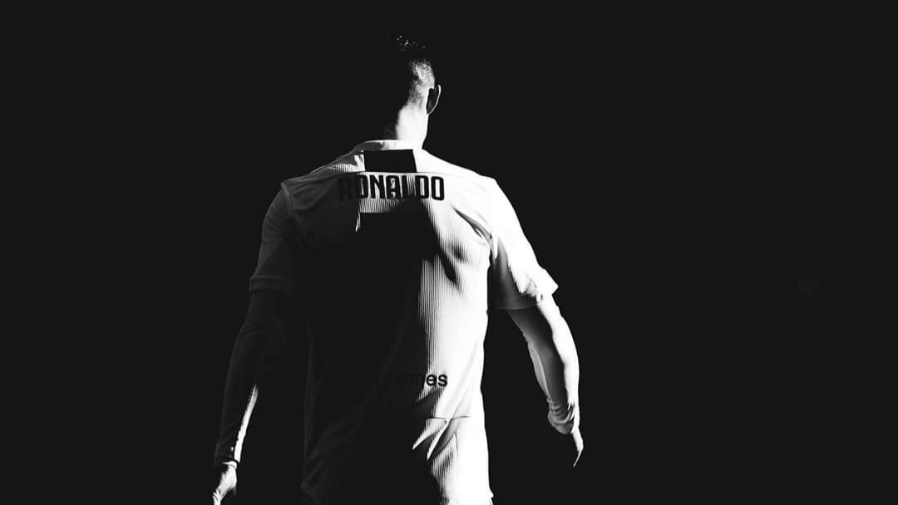

CRISTIANO RONALDO is the greatest football player in the world ever and there is not a single shadow of doubt
Ronaldo’s father, José Dinis Aveiro, was the equipment manager for the local club Andorinha. (The name Ronaldo was added to Cristiano’s name in honour of his father’s favourite movie actor, Ronald Reagan, who was U.S. president at the time of Cristiano’s birth.) At age 15 Ronaldo was diagnosed with a heart condition that necessitated surgery, but he was sidelined only briefly and made a full recovery. He first played for Clube Desportivo Nacional of Madeira and then transferred to Sporting Clube de Portugal (known as Sporting Lisbon), where he played for that club’s various youth teams before making his debut on Sporting’s first team in 2002.